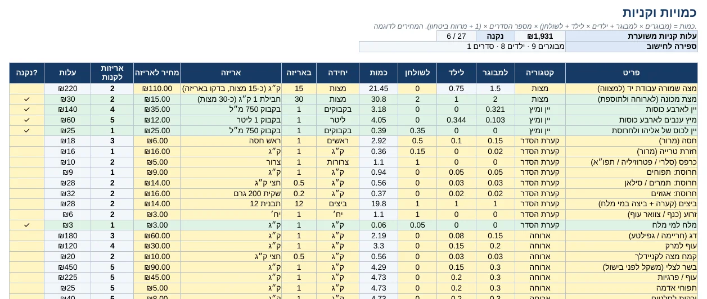
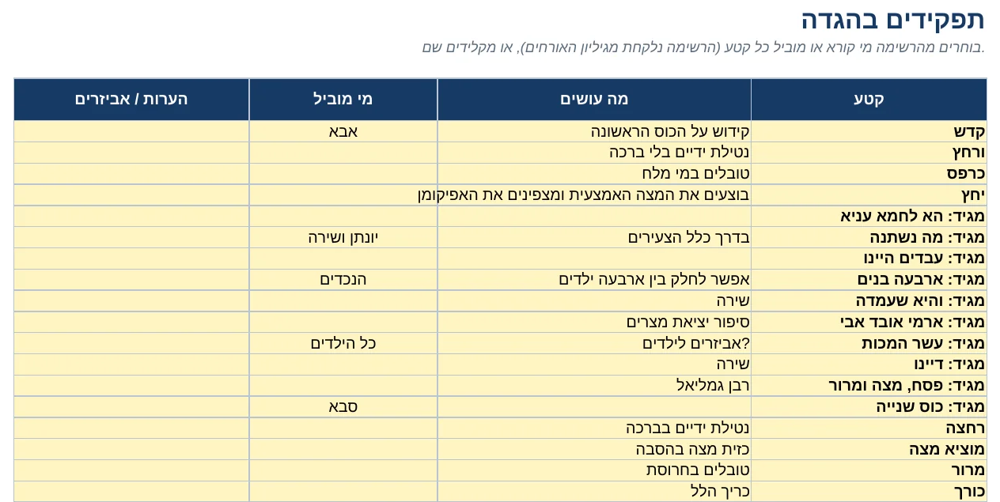

מתכנן ליל הסדר 2027 באקסל: אורחים, תפריט, כמויות, קניות ותפקידים בהגדה
רושמים מי מגיע, והקובץ מחשב כמה מצות, יין, מרור וכל מצרכי הארוחה צריך, בונה רשימת קניות עם עלות, מחלק את קטעי ההגדה ומסדר לוח הכנות לפי התאריך.
- Excel ו-Google Sheets
- מצות ויין לפי השיעור שתבחרו
- 27 מצרכים מוכנים + שורות שלכם
- תפקידים בהגדה
- הורדה מיידית
רוצים קודם חישוב מהיר? מחשבון מצות ויין החינמי. מארחים גם בפורים? פורים + פסח ב-₪29.

מה יש בקובץ
8 גיליונות מחוברים. מקלידים רק בתאים הצהובים.
אורחים
מבוגרים וילדים לכל משפחה, אישור הגעה, רגישויות ומה כל אחד מביא.
מצות ויין לפי השיעור
רביעית 86 או 150 מ״ל, כזיתים לכל מבוגר, מי שותה יין ומי מיץ ענבים.
כמויות וקניות
כמה לקנות מכל מצרך, באריזות שלמות, עם עלות משוערת וסימון מה נקנה.
תפקידים בהגדה
סימני הסדר וקטעי המגיד, ומי מוביל כל קטע: מה נשתנה, ארבעה בנים, עשר המכות.
לוח הכנות
16 משימות מ-6 שבועות לפני, עם תאריך יעד שמחושב לבד ומה שעבר מסומן באדום.
דשבורד
ימים לסדר, מצות, בקבוקי יין, עלות לסועד ועלות לפי קטגוריה מול התקציב.
ככה זה נראה
מקובץ הדוגמה המצורף (17 סועדים). המספרים להמחשה.


שאלות נפוצות
באיזו תוכנה זה עובד?
Excel (2010 ומעלה, גם בנייד), Google Sheets ו-LibreOffice. אין מאקרו.
איך הקובץ מחשב כמה מצות ויין?
לפי מספר המבוגרים והילדים שאישרו הגעה, מספר הסדרים (1 בארץ, 2 בחו״ל), שיעור הרביעית שבחרתם (86 או 150 מ״ל), כמה מהמבוגרים שותים יין, וכמה כזיתים מצה לכל מבוגר. את כל אלה קובעים בגיליון ההגדרות.
הכמויות לארוחה מדויקות?
הן כללי אצבע מקובלים לאירוח (למשל 300 גרם בשר לפני בישול למבוגר) ונועדו כנקודת פתיחה. כל מספר בתא צהוב ניתן לשינוי.
יש בקובץ פסיקה הלכתית?
לא. הקובץ מציג את השיעורים המקובלים עם מקורות, ומשאיר לכם לבחור לפי המנהג. לשאלות הלכה פנו לרב.
המחירים אמיתיים?
לא. אלה מחירים לדוגמה כדי שהחישוב יעבוד מיד. מעדכנים לפי המחירים אצלכם.
איך מקבלים את הקובץ?
מיד אחרי התשלום ב-PayPal (אפשר בכרטיס אשראי, בלי חשבון) נפתח דף הורדה עם קובץ ריק וקובץ דוגמה מלא.
עוד לפסח 2027
- צ׳קליסט ניקיון לפסח (PDF חינם)
- איך מארגנים ליל סדר
- פסח 2027: תאריכים
- כל מה שצריך לפסח
- Passover Seder Planner (English, USD)